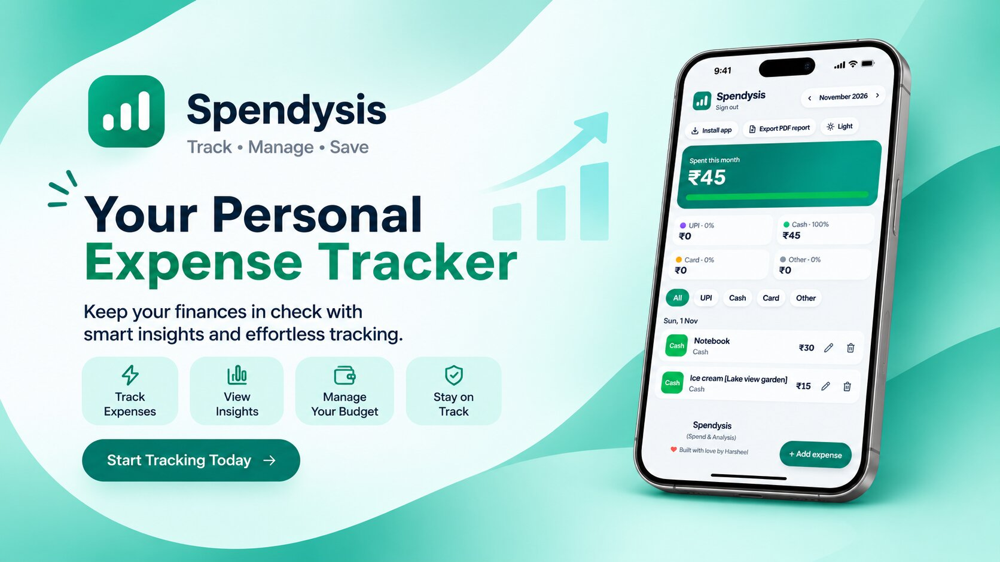
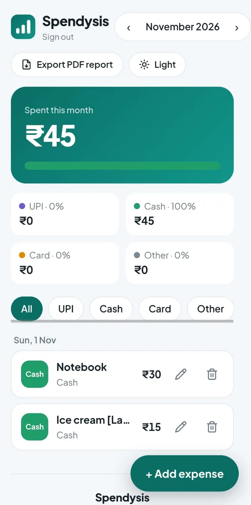
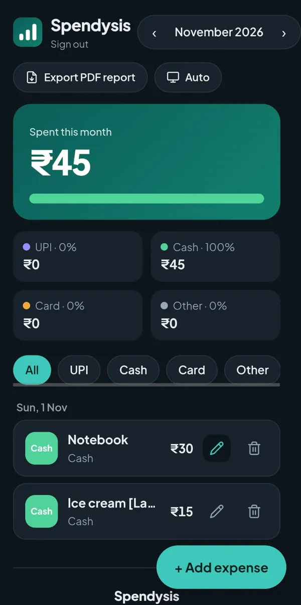
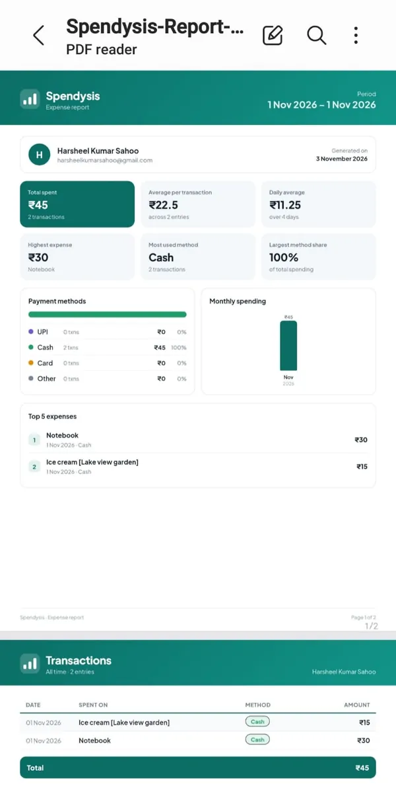

← All projects
Project · Nov 2026 · Full-stack web app
Spendysis
Spend + Analysis: a modern expense tracker with accounts, payment-method tracking and designed PDF reports.

About the project
See where your money goes.
Spendysis helps you see where your money goes each month. You log every expense with how you paid (UPI, cash, card or any other method), then view clear totals, a payment-method split and a downloadable PDF report. It works as an installable app on Android, iPhone and desktop.
Key features
- Accounts for multiple people: sign up and sign in with email and password, and every user only sees their own data.
- Track by payment method: UPI, Cash, Card, or Other (you type the method, for example net banking or cheque).
- Monthly view: switch between months and see the total, a colour-coded split bar and per-method percentages.
- Filter and edit: filter the list by payment method, edit any expense, and delete with a two-tap confirmation.
- PDF report: export a designed report for one month or all time, with six key statistics, a payment-method breakdown, a spending chart, the top 5 expenses and every transaction.
- Light, dark and auto themes. The light theme matches the PDF report's colour scheme.
- Installable PWA: install it from the browser on Android, iPhone and desktop, with an in-app install button.
- Responsive and mobile-first.
Screens
Light, dark and the PDF report



Technology
Tech stack
FrontendVanilla HTML, CSS and JavaScript (single page, no build step)
BackendNode.js 22, Express 4
DatabaseMongoDB Atlas with Mongoose
AuthJWT (30-day tokens) and bcrypt password hashing
PDF exporthtml2canvas and jsPDF, loaded on demand
HostingVercel (Express runs as a serverless function)
PWAWeb app manifest and a service worker
Security
Built with privacy in mind
- Passwords are hashed with bcrypt and never stored or exported in plain text.
- Login and register routes are rate limited.
- Every query is filtered by the signed-in user's ID, so users cannot see each other's data.